설비보전기사(구) (2018-09-15 기출문제)
1과목: 설비 진단 및 계측
1. 다음 제어의 용어 중 제어 장치에 속하며 목표값에 의한 신호와 검출부로부터 얻어진 신호에 의해 제어 장치가 소정의 작동을 하는데 필요한 신호를 만들어서 조작부에 보내주는 부분을 뜻하는 것은?
- 외란
- 조절부
- 작동부
- 제어량
(정답률: 77%)

2. 다음 매질 중 음속이 가장 느린 것은?
- 납
- 강철
- 나무
- 알루미늄
(정답률: 71%)
3. 소음의 물리적 성질 중 음파의 종류를 설명한 것으로 틀린것은?
- 평면파 : 음파의 파면들이 서로 평행한 파
- 발산파 : 음원으로부터 거리가 멀아질수록 더욱 넓은 면적으로 퍼져나가는 파
- 구면파 : 음원에서 모든 방향으로 동일한 에너지를 방출 때 발생하는 파
- 진행파 : 둘 또는 그 이상 음파의 구조적 간섭에 의해 시간적으로 일정하게 음압의 최고와 초저가 반복되는 패턴의 파
(정답률: 70%)
4. 크고 작은 두 소리를 동시에 들을 때 큰 소리만 듣고 작은 소리는 듣지 못하는 현상을 마스킹 효과라 한다. 다음 중 마스킹에 대한 설명으로 틀린 것은?
- 고음이 저음을 잘 마스킹 한다.
- 마스킹은 음파의 간섭에 의해 일어난다.
- 두 음의 주파수가 비슷할 때 마스킹 효과가 커진다.
- 두 음의 주파수가 거의 같을 때는 맥동이 생겨 마스킹 효과가 감소한다.
(정답률: 72%)
5. 다음 센서의 고정방식 중 먼지, 습기, 온도의 영향이 적고, 사용할 수 있는 주파수 영역이 넓으며 장기적인 안정성이 좋은 고정방식은?
- 손고정
- 나사고정
- 밀랍고정
- 마그네틱고정
(정답률: 84%)
6. 다음 중 옴의 법칙으로 맞는 것은?
- 전류(I) = 전압(V) + 저항(R)
- 전압(V) = 전류(I) × 저항(R)
- 저항(R) = 전압(V) × 전류(I)
- 전압(V) = 전류(I) ÷ 저항(R)
(정답률: 87%)
7. 다음 중 진동 측정용 센서와 가장 거리가 먼 것은?
- 변위센서
- 질량센서
- 속도센서
- 가속도센서
(정답률: 75%)
8. 진동폭의 ISO 단위에서 틀린 것은?
- 변위(m), 속도(m/s)
- 변위(m/s2), 속도(m/s)
- 변위(mm), 속도(mm/s)
- 속도(m/s), 가속도(m/s2)
(정답률: 72%)
9. 정현파 신호에서 진동의 크기를 표현할 것 중 옳은 것은?
- 피크-피크값(양진폭)은 실효값의 2배이다.
- 피크값(편진폭)은 진동량의 절대값 중 최소값이다.
- 실효값은 진동 에너지를 표현하는데 적합하며 피크 값의 약 0.7배이다.
- 평균값은 진동량을 평균한 값으로서 피크값의 1/√2배이다.
(정답률: 77%)
10. 소음기의 내면에 파이퍼 글라스(Fiber glass)와 암면 등과 같은 섬유성 재료를 부착하여 소음을 감소시키는 장치는?
- 팽창형 소음기
- 간섭형 소음기
- 공명형 소음기
- 흡음형 소음기
(정답률: 84%)
11. 다음 중 등청감 곡선을 바르게 표현한 것은?
- 음파의 시간적 변화를 표시한 곡선
- 음의 물리적 강약을 음압에 따라 표시한 곡선
- 사람의 귀와 같은 크기의 음압을 주파수별로 구하여 작성한 곡선
- 정상 청력을 가진 사람이 1000 Hz에서 들을 수 있는 최소 음압을 작성한 곡선
(정답률: 78%)
12. 계측기의 동작 특성 중 정특성에 속하지 않는 것은?
- 감도
- 직선성
- 과도 특성
- 히스테리시스 오차
(정답률: 50%)
13. 소음의 크기를 나타내는 단위로 맞는 것은?
- dB
- Hz
- ppm
- poise
(정답률: 88%)
14. 열전온도계(thermo electric pyrometer)에 관한 설명 중 틀린 것은?
- 구리와 콘스탄탄의 이종재를 결합하여 200~300 ℃ 정도의 저온용으로 사용한다.
- 다른 금속을 접합하여 양단의 온도차에 의해 발생되는 기전력을 이용한다
- 온도차에 의해 발생되는 열기전력 현상을 톰슨효과(Thomson effect)라 한다
- 백금로듐과 백금의 이종재를 결합하면 섭씨1000 ℃ 이상에서도 사용할 수 있다.
(정답률: 74%)
15. 진동 진폭의 파라미터로서 진동변위 D(㎛), 진동속도V(mm/s), 진동주파수를 f(Hz)라 할 때 진동변위와 진동속도 관계를 올바르게 표현한 것은?
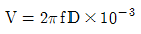
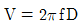
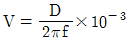
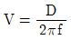
(정답률: 64%)
16. 회전체에 반사테이프를 부착하고 초점 조정이 용이한 적색 가시광의 LED를 광원으로 이용하여 그 반사광을 검출한 후 신호를 변환시켜 회전주기의 역수로 회전수를 구하는 회전계는?
- 광전식 회전계
- 자기식 회전계
- 전자식 회전계
- 접촉식 회전계
(정답률: 86%)
17. 다음 중 과도응답 특성을 파악하기 위하여 기본적으로 사용하는 입력신호가 아닌 것은?
- 계단 신호
- 임펄스 신호
- 정현파 신호
- 삼각파 신호
(정답률: 58%)
18. 팽창식 체임버의 소음흡수 능력을 결정하는 기본 요소는 면적비이다. 이때의 면적비를 표현하는 식은?
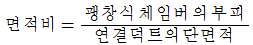
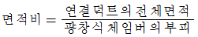
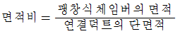
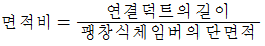
(정답률: 70%)
19. 차압식 유량계에 이용하는 차압 기구에 속하지 않는것은?
- 노즐
- 오리피스
- 벤투리관
- 로터미터
(정답률: 72%)
20. 다음 중 미스얼라인먼트(Misalignment)의 원인이 아닌 것은?
- 회전하는 축이 휘어진 경우
- 베어링의 설치가 잘못된 경우
- 축 중심이 기계의 중심선에서 어긋났을 경우
- 회전축의 질량중심선이 축의 기하학적 중심선과 일치하지 않는 경우
(정답률: 58%)
2과목: 설비관리
21. 다음 중 직접측정의 특징으로 틀린 것은?
- 측정 범위가 다른 측정 방법보다 넓다.
- 측정물의 실제 치수를 직접 잴 수 있다.
- 양이 많고 종류가 적은 제품을 측정하기에 적합하다.
- 눈금을 잘못 읽기 쉽고 측정하는데 시간이 많이 걸린다
(정답률: 72%)
22. 다음 중 설비의 경제성 평가방법이 아닌 것은?
- 변환법
- 비용비교법
- 자본회수법
- MAPI 방식
(정답률: 62%)
23. 연소관리 중 연소의 합리화를 위해서는 연소율을 적당히 유지하는 것이 필요하다. 부하가 과대한 경우의 대책으로 틀린 것은?
- 연소방식을 개량한다.
- 이용할 노상면적을 작게 한다.
- 연도를 개조하여 통풍이 잘되게 한다
- 연료의 품질 및 성질이 양호한 것을 사용한다.
(정답률: 72%)
24. 설비열화의 대책에 관한 내용과 가장 거리가 먼 것은?
- 열화 측정을 위하여 검사를 실시한다.
- 열화 회복을 위하여 수리를 실시한다.
- 열화 속도 지연을 위하여 경향 검사를 실시한다
- 열화 방지를 위하여 급유, 교환, 조정, 청소등 일상 보전 활동을 한다.
(정답률: 71%)
25. 공사를 완급도에 따라 구분할 때 구두 연락으로 즉시 착공하고, 착공 후 전표를 제출하는 공사는?
- 예비공사
- 긴급공사
- 준급공사
- 계획공사
(정답률: 79%)
26. 상비품 품목결정방식 중 비상비품의 재고방식을 계획 구입방식이라고 한다. 다음 계획 구입방식의 특성으로 틀린 것은?
- 관리수속이 복잡하다.
- 재고금액이 많아진다.
- 시설변경에 대한 손실이 적다.
- 재질변경에 대한 손실이 적다.
(정답률: 64%)
27. 설비의 종류, 설비의 수, 크기와 용량 그리고 설비 위치 등에 연계된 보전 개념과 보전 작업의 결정 및 정보 연계로서 설비 계획 및 관리에 대한 명확한 책임 및 권한이 있으며 동종 설비의 여러 지역 설치로 보전 능력의 분산을 갖는 설비망은?
- 제품 중심 설비망
- 공정 중심 설비망
- 시장 중심 설비망
- 프로젝트 중심 설비망
(정답률: 71%)
28. 다음 중 설비 계획의 필요성과 가장 거리가 먼 것은?
- 신규 사업의 개발
- 제품의 품종 변경
- 생산 규모의 변경
- 기술력을 통한 부품 증가
(정답률: 72%)
29. 설비나 시스템의 효율을 극대화하기 위한 개별개선 활동에서 가장 첫 번째로 수행하는 것은?
- 개선안 수립
- 중점설비 선정
- 로스의 영향 분석
- 로스의 정량적 측정
(정답률: 72%)
30. 공정에서 취한 계량치 데이터가 여러 개 있을 때, 데이터가 어떤 값을 중심으로 어떤 모습으로 산포하고 있는가를 조사하는데 사용하는 것은?
- 관리도
- 파레토도
- 체크시트
- 히스토그램
(정답률: 71%)
31. 가공 및 조립형 설비로스의 종류와 정의에 종류에 따른 정의가 잘못 설명된 것은?
- 고장로스 – 돌발적 또는 만성적으로 발생하는 고장에 의하여 발생되는 시간로스
- 속도저하로스 – 설비의 설계에 의한 이론 사이클 시간과 실제 사이클 시간과의 차이
- 준비·교체·조정로스 – 준비작업 및 품종교체, 공구교환에 의한 시간적 로스
- 수율저하로스 – 공정 중에 발생하는 불량품에 의한 불량로스
(정답률: 70%)
32. 설비보전에 강한 작업자의 요구능력 중 수리할 수 있는 능력이 아닌 것은?
- 설비의 고장진단을 할 수 있다.
- 부품의 수명을 알고 교환할 수 있다.
- 오버홀(overhaul) 시 보조할 수 있다.
- 고장원인을 추정하고 긴급처리를 할 수 있다.
(정답률: 49%)
33. 보전작업 표준화의 목적은 보전작업의 낭비를 제거하여 효율성을 증대시키기 위한 것이다. 다음 중 보전표준의 종류가 아닌 것은?
- 작업표준
- 수리표준
- 자재표준
- 일상점검표준
(정답률: 72%)
34. 생산성을 향상시키기 위하여 현상을 파악하고 개선하기 위한 6대 요소에 해당되지 않는 것은?
- 의욕
- 안전
- 납기
- 측정
(정답률: 46%)
35. 공정별 배치에서 동일 기종이 모여 있는 시스템은?
- 갱 시스템(gang system)
- 라인 시스템(line system)
- 혼합형 시스템(combination system)
- 제품 고정형 시스템(fixed position system)
(정답률: 71%)
36. 설비의 효율성을 결정짓는 하나의 속성으로서 “시스템이 어떤 특정 환경과 운전조건 하에서 어느 주어진 시간동안 명시된 특정기능을 성공적으로 수행 할 수 있는 확률”을 무엇이라고 하는가?
- 고장도
- 신뢰도
- 보전도
- 시스템도
(정답률: 81%)
37. 설비보전 효과를 측정하는 식으로 틀린 것은?
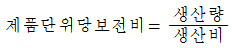
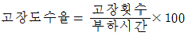
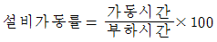
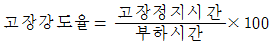
(정답률: 66%)
38. 지그와 고정구(jig and fixture), 금형, 절삭공구, 검사구(fauge) 등 각종의 공구를 통칭하는 용어는?
- 치공구
- 계측공구
- 공작기계
- 제작공구
(정답률: 79%)
39. 설비를 관리할 때 설비운전 시 발휘하는 성능에 대한 표준으로 용도, 주요크기, 용량, 정도, 구조, 재질, 작동 전력량 등을 나타내는 표준은?
- 설비 성능표준
- 설비 설계규격
- 설비자재 구매표준
- 설비자재 검사표준
(정답률: 74%)
40. TPM과 전통적 관리와의 차이점 중 TPM과 가장 관계가 깊은 것은?
- 사후 활동
- Output 지향
- 원인추구 시스템
- 상벌위주의 동기부여
(정답률: 69%)
3과목: 기계일반 및 기계보전
41. 줄 작업 시 용도에 따라 작업방법을 선택한다. 이에 해당되지 않는 줄작업 방법은?
- 직진법
- 피닝법
- 사진법
- 병진법
(정답률: 66%)
42. 다음 중 무단 변속기에 관한 설명으로 틀린 것은?
- 체인식 무단변속기의 일반적인 점검주기는 1000~1500 시간이다.
- 체인식 무단변속기의 변속조작은 회전 중에 아니면 할 수 없다.
- 벨트식 무단변속기는 유욕식이 아니므로 윤활불량을 일으키기 쉽다.
- 마찰 바퀴식 무단변속기의 변속조작은 반드시 정지 중에 해야 한다.
(정답률: 59%)
43. 연삭숫돌의 입자가 무디거나 눈 메음(loading)이 나타나면 연삭성이 저하하므로 숫돌의 표면을 깎아서 예리한 날을 가진 입자가 표면에 나타나게 하여 연삭성을 회복시키는 작업을 무엇이라 하는가?
- 래핑(lapping)
- 트루잉(truing)
- 폴리싱(polishing)
- 드레싱(dressing)
(정답률: 67%)
44. 다음 중 전동기의 과열원인과 가장 거리가 먼 것은?
- 과부하 운전
- 빈번한 기동, 정지
- 베어링부에서의 발열
- 로터와 스테이터의 접촉
(정답률: 65%)
45. 축 고장 시 설계 불량의 직접원인이 아닌 것은?
- 재질 불량
- 치수강도 부족
- 끼워맞춤 불량
- 형상구조 불량
(정답률: 73%)
46. 일반적인 보전용 자재의 관리상 특징을 설명한 것으로 틀린것은?
- 불용자재의 발생 가능성이 작다.
- 자재구입의 품목, 수량, 시기의 계획을 수립하기 곤란하다.
- 보전용 자재는 연간 사용빈도가 낮으며, 소비 속도가 늦다.
- 보전의 기술수준 및 관리수준이 보전자재의 재고량을 좌우하게 된다.
(정답률: 50%)
47. 다음 중 한계 게이지의 특징으로 틀린 것은?
- 제품의 실제 치수를 읽을 수 없다.
- 조작이 간단하고 경험을 필요로 하지 않는다.
- 측정치수가 정해지고 한 개의 치수마다 한 개의 게이지가 필요하다
- 다량의 제품을 측정하기 어렵고, 양호와 불량의 판정을 쉽게 내릴 수 없다.
(정답률: 59%)
48. 오프셋 링크에서 링크판과 부시를 일체화시킨 것으로, 오프셋 링크와 이음 핀으로 연결되어있으며, 저속 중용량의 컨베이어, 엘리베이터용으로 사용되는 체인은?
- 롤러 체인
- 부시 체인
- 핀틀 체인
- 블록 체인
(정답률: 57%)
49. 운동체와 정지체와의 기계적 접촉에 의해 운동체를 감속 또는 정지시키고, 정지상태를 유지하는 기능을 가진 요소는?
- 클러치
- 브레이크
- 래치 휠
- 감속기
(정답률: 83%)
50. 와셔를 굽히거나 구멍을 만들어 그곳에 끼운후 볼트, 너트의 풀림을 방지하는 화셔는?
- 폴(pawl)와셔
- 고무(rubber)와셔
- 스프링(spring)와셔
- 중지판(lock plate)와셔
(정답률: 75%)
51. 플랜지 커플링의 조립과 분해 시의 유의사항중 옳은 것은? (문제 오류로 실제 시험에서는1, 3, 4번이 정답처리 되었습니다. 여기서는 1번을 누르면 정답 처리 됩니다.)
- 조임 여유를 많이 두지 않는다.
- 축과 축의 흔들림은 0.03mm 이내로 한다.
- 분해할 때 플랜지에 과도한 힘을 주지 않는다.
- 축과 플랜지 원주면에 대한 흔들림은 0.03mm 이내로 한다
(정답률: 70%)
52. 다음 설비관계의 표준 중 설비의 열화측정, 열화의 진행방지 및 열화회복과 가장 관계가 깊은 표준은?
- 설비성능표준
- 설비보전표준
- 보전작업표준
- 설비검사표준
(정답률: 64%)
53. 기어가 회전할 때 발생하는 이의 접촉압력에 의해 최대전단응력이 발생하여 표면에 가는 균열이 생기고, 그 균열 속에 윤활유가 들어가 고압을 받아 이의 면에 일부가 떨어져 나가는 현상은?
- 피칭
- 스코어링
- 이의 절손
- 어브레이진
(정답률: 52%)
54. 다음 중 터보형 압축기에 해당하는 것은?
- 축류압축기
- 왕복압축기
- 회전식 압축기
- 나사식 압축기
(정답률: 50%)
55. 산성 등의 화학 약품을 차단하는 경우에 내양품, 내열 고무제의 격막 판을 밸브시트에 밀어 붙이는 밸브이며, 유체 흐름 저항이 적고 기밀 유지에 패킹이 필요 없으며 부식의 염려가 없는 밸브는?
- 플립 밸브
- 게이트 밸브
- 리프트 밸브
- 다이어프램 밸브
(정답률: 70%)
56. 원심 펌프의 임펠러에 의해 유체에 가해진 속도에너지를 압력에너지로 변환되도록 하고 유체의 통로를 형성해 주는 역할을 하는 일종의 압력용기를 무엇이라 하는가?
- 웨어링
- 케이싱
- 안내 깃
- 스터핑 박스
(정답률: 67%)
57. 용접법의 분류 중에서 융접에 해당하지 않는 것은?
- 저항 용접
- 스터드 용접
- 피복 아크 용접
- 서브머지드 아크 용접
(정답률: 60%)
58. 다음 중 관이음의 종류가 아닌 것은?
- 용접 이음
- 신축 이음
- 롤러 관이음
- 나사형 이음
(정답률: 65%)
59. 송풍기의 풍량을 조절하는 방법으로 옳지 않는 것은?
- 가변 피치에 의한 조절
- 송풍기의 회전수를 변화시키는 방법
- 송풍기 축의 축 방향의 신장 조절
- 흡입구 댐퍼에 의한 조절
(정답률: 67%)
60. 일반적인 질화법의 특징으로 틀린 것은?
- 경화에 의한 변형이 크다.
- 질화 후의 열처리가 필요 없다.
- 침탄법에 비해 경화층이 얇고 조작시간이 길다.
- 질화층을 깊게 하려면 긴 시간이 걸린다.
(정답률: 47%)
4과목: 윤활관리
61. 다음 윤활유의 급유법 중 윤활유를 미립자 또는 분무 상태로 급유하는 방법으로 여러개의 다른 마찰면을 동시에 자동적으로 급유할 수 있는 것은?
- 바늘 급유법
- 원심 급유법
- 버킷 급유법
- 비말 급유법
(정답률: 73%)
62. 기어 윤활에서 기어의 손상에 대한 설명으로 옳은 것은?
- 리징(ridging) : 외관이 미세한 홈과 퇴적상이 마찰 방향과 평행으로 거의 등간격으로 된 것이 특징이다.
- 리플링(rippling) : 국부적으로 금속 접촉이 일어나 용융 되어 띁겨가는 현상으로 극압성 윤활제가 좋다.
- 스폴링(spalling) : 높은 응력이 반복 작용된 결과로 박리현상이 없으며 윤활유의 성상과는 무관하다.
- 피팅(potting) : 고속 고하중 기어에는 이면의 유막이 파단되어 국부적으로 금속 접촉이 일어나는 것이다.
(정답률: 55%)
63. 구름베어링의 윤활방법은 그리스윤활과 기름윤활이 있다. 기름윤활의 장점이 아닌 것은?
- 윤활제의 교환이 비교적 간단하다.
- 냉각작용 및 냉각효과가 우수하다.
- 높은 회전속도에서 사용할 수 있다.
- 급유가 어렵고 밀봉작업이 필요하다
(정답률: 68%)
64. 옥외에 사용되는 유압 시스템에서 온도 변화가 심할 경우에 넓은 온도범위에 걸쳐 사용될 수 있도록 유압 작동유에 첨가되는 첨가제는 무엇인가?
- 방청제
- 내마모제
- 산화방지제
- 점도지수 향상제
(정답률: 72%)
65. 윤활유의 열화 판정 중 직접 판정법에 대한 설명으로 틀린 것은?
- 신유의 성상을 사전에 명확히 파악한다.
- 사용유의 대표적 시료를 채취하여 성상을 조사한다.
- 신유와 사용유의 성상을 비교 검토 후 관리기준을 정하고 교환하도록 한다.
- 투명한 2장의 유리관에 기름을 넣고 투시해서 이물질의 유무를 조사한다.
(정답률: 66%)
66. 윤활관리의 경제적 효과로서 맞는 것은?
- 윤활제 소비량의 증가효과
- 고장으로 인한 생산성 및 기회손실의 증가효과
- 설비의 수명감소로 인한 설비 투자비용의 절감효과
- 기계. 설비의 유지관리에 필요한 보수비 절감효과
(정답률: 67%)
67. 윤활유의 열화방지를 위한 방법으로 틀린 것은?
- 고온을 가능한 피한다.
- 오일은 혼합사용 한다.
- 협잡물 혼입 시에는 신속히 제거한다.
- 신기계 도입시 충분한 플러싱 후 사용한다.
(정답률: 83%)
68. 그리스의 내열성을 확인하는 시험으로 가열 시 최초로 융해 적하하기 시작되는 최저의 온도를 무엇이라 하는가?
- 점도
- 적점
- 유동점
- 이유도
(정답률: 74%)
69. 두 개 이상의 물체가 서로 상대운동을 할 때 물체 표면에서 발생하는 과학적 현상으로, 마찰과 마모 및 윤활을 다루는 학문을 무엇이라고 하는가?
- Friction
- Tribology
- Lubrication
- Maintenance
(정답률: 65%)
70. 유압작동유가 갖추어야 할 성질로서 틀린 것은?
- 난연성일 것
- 체적 탄성계수가 작을 것
- 전단안정성, 유화안정성이 클 것
- 캐비테이션이 잘 일어나지 않을 것
(정답률: 67%)
71. 다음 중 그리스 급유법이 아닌 것은?
- 그리스 컵
- 그리스 건
- 그리스 니플
- 집중 그리스 윤활장치
(정답률: 66%)
72. 다음 중 윤활유 첨가제가 갖추어야 할 조건이 아닌 것은?
- 휘발성이 낮을 것
- 물에 대해 안정할 것
- 기유에 대한 용해도가 낮을 것
- 첨가제 상호간 반응으로 침전물 등이 생기지 않을 것
(정답률: 68%)
73. 다음 중 윤활유의 탄화와 관계가 없는 것은?
- 고온 표면과 의 접촉
- 윤활유의 가열 분해
- 공기 중의 산소 흡수
- 열전도 속도보다 산소와의 반응 속도가 늦음
(정답률: 61%)
74. 상대 접촉면의 윤활을 원활히 하고, 기계의 운전 상태를 최적으로 유지시키기 위한 그리스의 일반적인 선정기준과 가장 거리가 먼 것은?
- 보관방법
- 운전조건
- 급유방법
- 주변환경
(정답률: 51%)
75. 베어링이나 기어 등에 사용되는 윤활유는 사용 중에 교반에 의해 기포가 생성되며, 이기포가 마멸이나 윤활유의 열화를 촉진시킨다. 이와 같은 현상을 방지하기 위하여 윤활유에서 요구하는 성질은?
- 점도
- 소포성
- 내 하중성
- 청정 분산성
(정답률: 79%)
76. 왕복동 공기 압축기 윤활유 중 외부유에 요구되는 성능으로 틀린 것은?
- 저점도 지수유일 것
- 적정 점도를 가질 것
- 산화 안정성이 좋을 것
- 방청성, 소포성이 좋은 것
(정답률: 79%)
77. 윤활관리 실시에 의해서 얻어지는 성과로 볼수 없는 것은?
- 윤활제 비용의 감소
- 생산가동시간의 증가
- 기계보전비용의 증가
- 기계의 유효수명의 연장
(정답률: 73%)
78. 윤활유의 첨가제 중 금속의 표면에 유막을 형성시켜 마찰계수를 작게 하여 유막이 끊어지지 않도록 하는 것은?
- 극압제
- 산화 방지제
- 유성 향상제
- 유동점 강화제
(정답률: 60%)
79. 실험실에서 오염의 정도를 측정하고자 한다. 시료유 100ml중의 오염 물질의 크기 개수를 측정하는 방법을 무엇이라고 하는가?
- 중량법
- 계수법
- 오염 지수법
- 수분 측정법
(정답률: 57%)
80. 윤활유에서 발생되는 트러블 현상에 대한 원인이 잘못 연결된 것은?
- 수분 증가 – 고체입자 혼입
- 인화점 감소 – 저점도유 혼입
- 동점도 증가 – 고점도유의 혼입
- 외관 혼탁 – 수분이나 고체의 혼입
(정답률: 68%)
5과목: 공유압 및 자동화
81. 공압이 유압에 비해 갖는 장점은?
- 공기의 압축성을 이용하여 많은 에너지를 저장할 수 있다.
- 유압에 비해 큰 압력을 이용하므로 큰 힘을 낼 수 있다.
- 저속(50mm/sec이하)에서 스틱-슬립 현상이 발생하여 안정된 속도를 얻을 수 있다.
- 유압보다 공기 중의 수분의 영향을 덜 받는다.
(정답률: 68%)
82. 다음 중 1 atm과 같지 않은 것은?
- 1013 kPa
- 760 mmHg
- 1.0132 bar
- 10332 kgf/m2
(정답률: 58%)
83. 다음 중 압력제어 밸브의 역할은?
- 일의 방향을 조절
- 일의 속도를 조절
- 일의 시간을 조절
- 일의 크기를 조절
(정답률: 71%)
84. 컨베이어를 설계하는 원칙으로 적절하지 않은 것은?
- 속도의 원칙
- 혼재의 원칙
- 균일성의 원칙
- 이송능력의 한계
(정답률: 67%)
85. PID 고전 제어에 있어서 에러를 없애주는 제어장치는 ?
- 증폭기
- 미분제어기
- 비례제어기
- 적분제어기
(정답률: 59%)
86. 공압 모터의 특징이 아닌 것은?
- 배기음이 크다
- 제어성이 우수하다
- 에너지 변환 효율이 낮다
- 부하에 의해 회전수 변동이 크다
(정답률: 47%)
87. 다음 밸브의 제어라인에 부여하는 숫자로 옳은 것은?
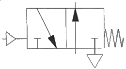
- 1
- 2
- 10
- 13
(정답률: 58%)
88. 자동화 보수 관리의 목적으로 틀린 것은?
- 생산성 향상
- 신속한 고장 수리
- 기계의 사용 연수가 감소
- 자동화 시스템을 항상 양호의 상태로 유지
(정답률: 79%)
89. 다음 모터의 정 · 역회로에서 사용된 것은?
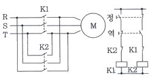
- 인터록회로
- 시간지연회로
- 양수안전회로
- 자기유지회로
(정답률: 72%)
90. 유압 실린더에서 피스톤과 실린더 커버가 충돌하여 발생하는 충격의 경감, 실린더 수명연장, 충격파 발생방지를 목적으로 하는 장치는?
- 쿠션 장치
- 에어 브리저
- 피스톤 패킹
- 더스트 와이퍼
(정답률: 73%)
91. 3상 유도 전동기가 원래의 속도보다 저속으로 회전할 경우원인으로 적절하지 않은 것은?
- 과부하
- 퓨즈 단락
- 베어링 불량
- 축받이의 불량
(정답률: 65%)
92. 개회로 제어(Open lop control)에 해당하는 것은?
- 수직다관절 로봇의 모션제어
- CNC 공자기계 이송테이블 제어
- 서보모터를 이용한 단축 위치 제어
- PLC에 의한 공압 솔레노이드 밸브 제어
(정답률: 63%)
93. 단위 질량당 유체의 체적을 무엇이라 하는가?
- 밀도
- 비중
- 비체적
- 비중량
(정답률: 68%)
94. 고장과 고장사이의 평균시간을 나타내는 것은?
- MTBF
- MTBM
- MTTF
- MTTR
(정답률: 61%)
95. 유압 펌프가 기름을 토출하지 않아 흡입쪽을 검사하였다. 검사 방법과 가장 거리가 먼 것은?
- 점도의 적정 여부
- 스트레이너의 막힘 여부
- 오일 탱크내의 오일량 적정량 여부
- 전동기 축과 펌프 축의 중심 일치 여부
(정답률: 63%)
96. 압축 공기가 2개의 입구 중 어느 하나에만 입력이 있어도 신호가 출구로 나가게 되는 밸브는?
- 2압 밸브
- 셔틀 밸브
- 차단 밸브
- 체크 밸브
(정답률: 65%)
97. 실리카겔(SiO2: 실리콘 이옥사이드)과 같은 물질을 사용하여 압축공기 속의 수분을 제거하는 방식은?
- 고온 건조
- 저온 건조
- 흡수식 건조
- 흡착식 건조
(정답률: 66%)
98. 연속적인 물리량인 온도를 측정하는 열전대의 출력 신호의 형태는?
- 2진 신호
- 전류 신호
- 디지털 신호
- 아날로그 신호
(정답률: 67%)
99. 밸브의 기능상 분류에서 시퀸스 밸브는 무엇인가?
- 방향제어
- 속도제어
- 압력제어
- 유량제어
(정답률: 44%)
100. 일반적인 공압 발생장치의 기기순서로 옳은 것은?
- 공기 압축기 → 냉각기 → 저장탱트 → 에어드라이어 → 공압 조정 유닛
- 공기 압축기 → 저장탱크 → 에어드라이어 → 후부 냉각기 → 배관 및 공압 조정 유닛
- 공기 압축기 → 어어드라이어 → 저장탱크 → 후부 냉각기 → 배관 및 공압 조정 유닛
- 공기 압축기 → 공압 조정 유닛 → 에어드라이어 → 저장탱크 → 후부 냉각기 → 배관
(정답률: 57%)